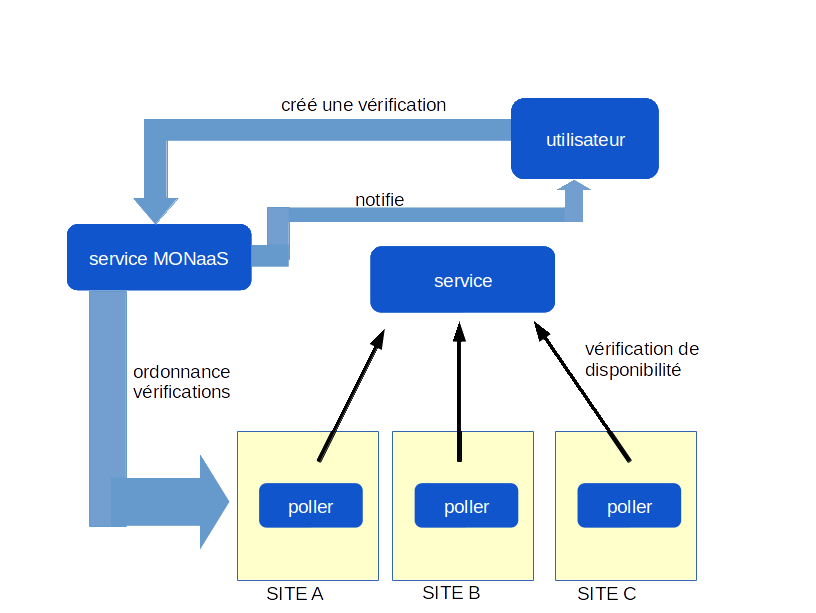
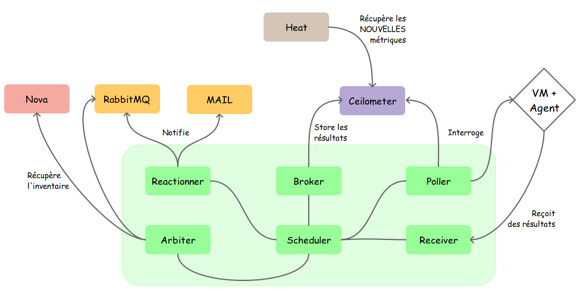
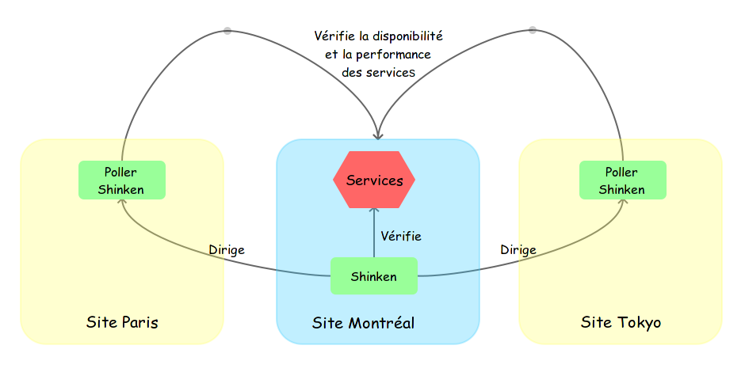

Supervision OpenStack
MONaaS
Alexandre Viau
alexandre.viau@savoirfairelinux.comThibault Cohen
thibault.cohen@savoirfairelinux.comMonitoring as a Servce
MONaas
Qu'est-ce que la supervision?
- Exécute des vérifications
- Applique des règles
- Alerte les utilisateurs
- Stocke un historique des données
L'État de la supervision dans le cloud

“Amazon CloudWatch fournit une surveillance pour les ressources du cloud AWS et les applications que les clients exécutent sur AWS.”
- Supervision passive seulement
- API Put pour métriques personnalisées
- Alarmes
- Utilisez Auto Scaling pour ajouter ou supprimer dynamiquement des instances Amazon EC2 en fonction de vos mesures Amazon CloudWatch
- Supervision active et passive
- Vérification de services
- API Put pour métriques personnalisées
- Alarmes
- Agent in-instance
OpenStack Telemetry
Ceilometer

Objectif initial
Être l’unique point de contact pour les systèmes de facturation et d’acquérir toutes les mesures dont ceux ci ont besoin pour effectuer la facturation à travers l’ensemble des composants d’OpenStack.
Depuis Grizzly:
Devenir l’infrastructure pour la collecte de mesures dans OpenStack afin d’éviter que deux agents soient développés pour acquérir les mêmes données. Le but principal de Ceilometer est le monitoring et le metering.

Les métriques disponibles dans Ceilometer
- Utilisation CPU
- Utilisation mémoire
- Utilisation du disque
- Trafic réseau
Ce qui manque...
- Polling
- Disponibilité de services
- Données applicatives
- Scénarios de vérification
- Règles d'affaires
- Scaling sur les données applicatives
Fil conducteur...
Monitoring as a Service
- API RESTful
- Hautement disponible
- Tolérant aux erreurs
- Autosupervisé
Ce que cela apporterait
Polling d'agents dans les instances
- NRPE
- SNMP
- SSH
- etc... Nouveau protocole??
Supervision des services
- Disponibilité
- Temps de réponse
- Scénarios HTTP
- Protocoles TCP/UDP (NTP, DNS, MYSQL, SMTP, IMAP, ...)
Supervision depuis plusieurs sites
- Expérience utilisateurs depuis plusieurs sites
- Assurer la disponibilité
- Supervision plus complète
- Comment est-ce que les utilisateurs de Montréal vivent la release localisée d'un nouveau module de notre application?
Supervision depuis plusieurs sites (schéma)
Nos démarches
- Soumission du blueprint
- Openstack-dev
- Contact avec l'équipe de Ceilometer
Pistes d'exploration
hpcloud-mon

Shinken comme coeur de supervision ?
- Compatibilité Nagios
- Écrit en Python
- Architecture modulaire
- Intégration possible dans Horizon
Exemple d'implémentation avec Shinken
Exemple d'implémentation avec Shinken
Supervision de l'infrastructure OpenStack
- Disponibilité de chaque élément d’OpenStack à travers l’API
- Performance de chaque éléments d’OpenStack à travers Ceilometer
- Supervision des événements à travers RabbitMQ
Supervision sur terre
- Supervision standard de l’infrastructure
- Serveurs
- Switches
- Firewall
- SAN
- ...
En résumé
Supervision de trois niveaux :
- Des applicatifs (Support de StatD, ...)
- De la plate-forme (Apache, Mysql, Reddis, ...)
- De l’infrastructure (CPU, mémoire, IO, ...)
Le concept de royaume dans Shinken permettrait d’effectuer la superivision de ces trois niveaux, de façon indépendante
références
- Blueprint MONaas: https://blueprints.launchpad.net/ceilometer/+spec/monitoring-as-a-service
- Page wiki: https://wiki.openstack.org/wiki/MONaaS
- Annoncement sur openstack-dev: http://lists.openstack.org/pipermail/openstack-dev/2014-May/034189.html
Questions / Discussion
{kind=link}
⇑⇑ savoirfairelinux.github.io/MONaaS-presentation ⇑⇑